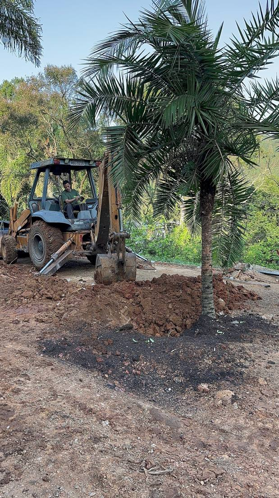
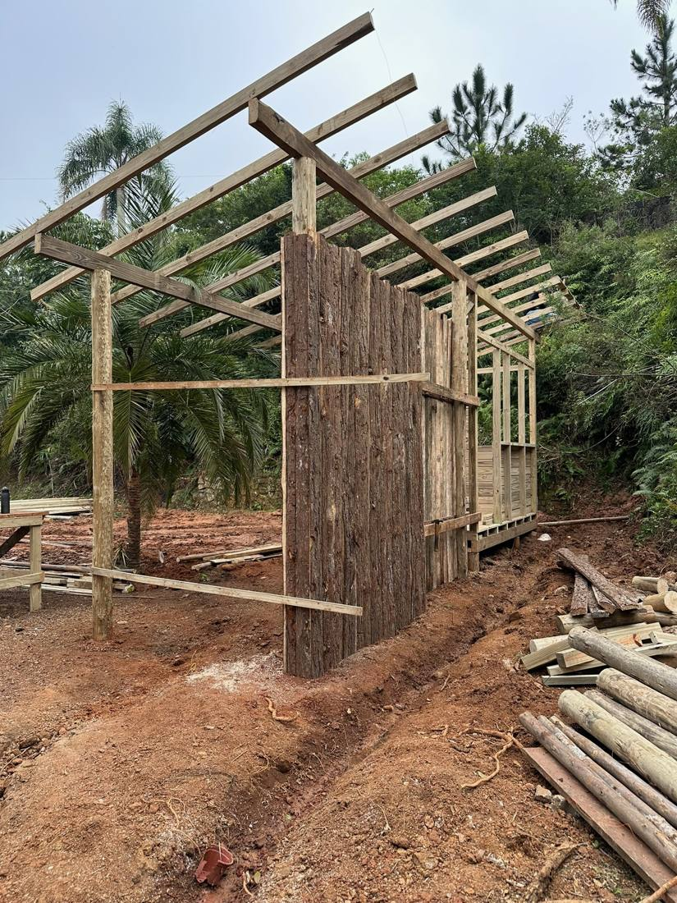
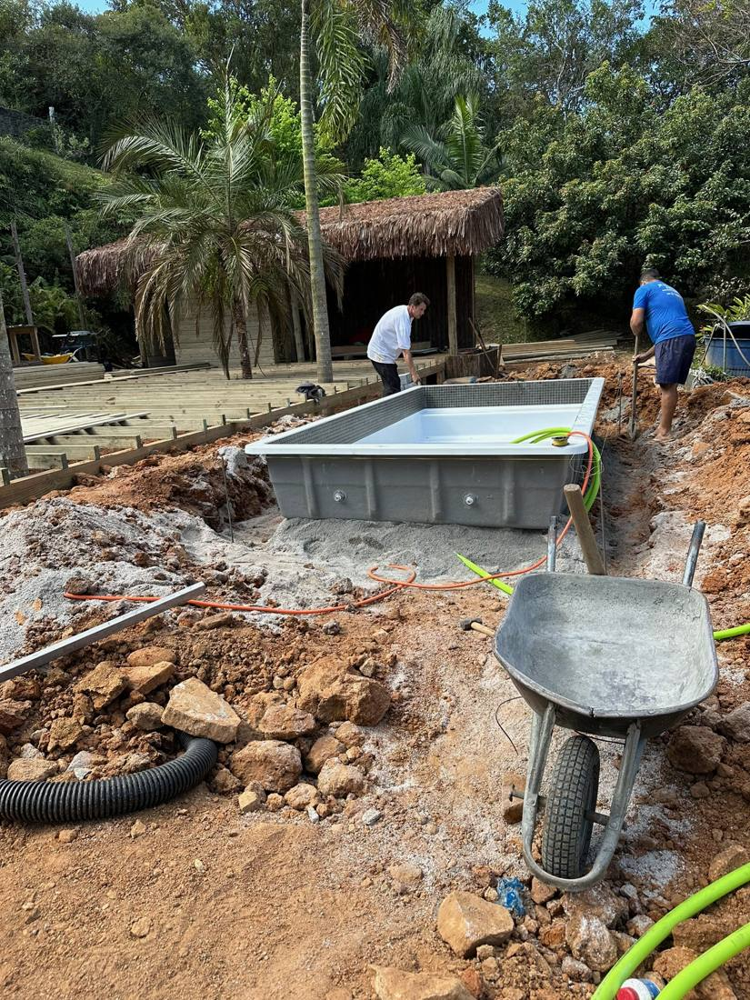
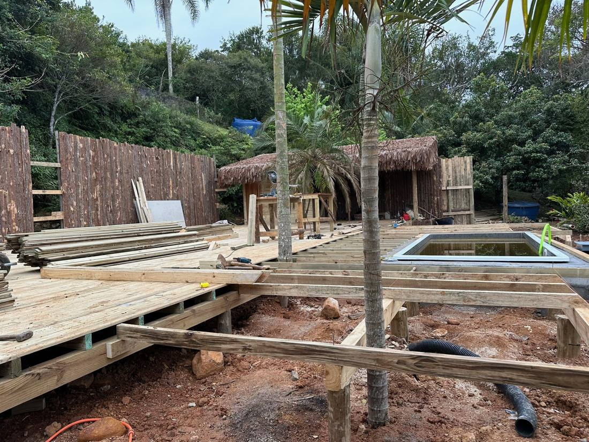
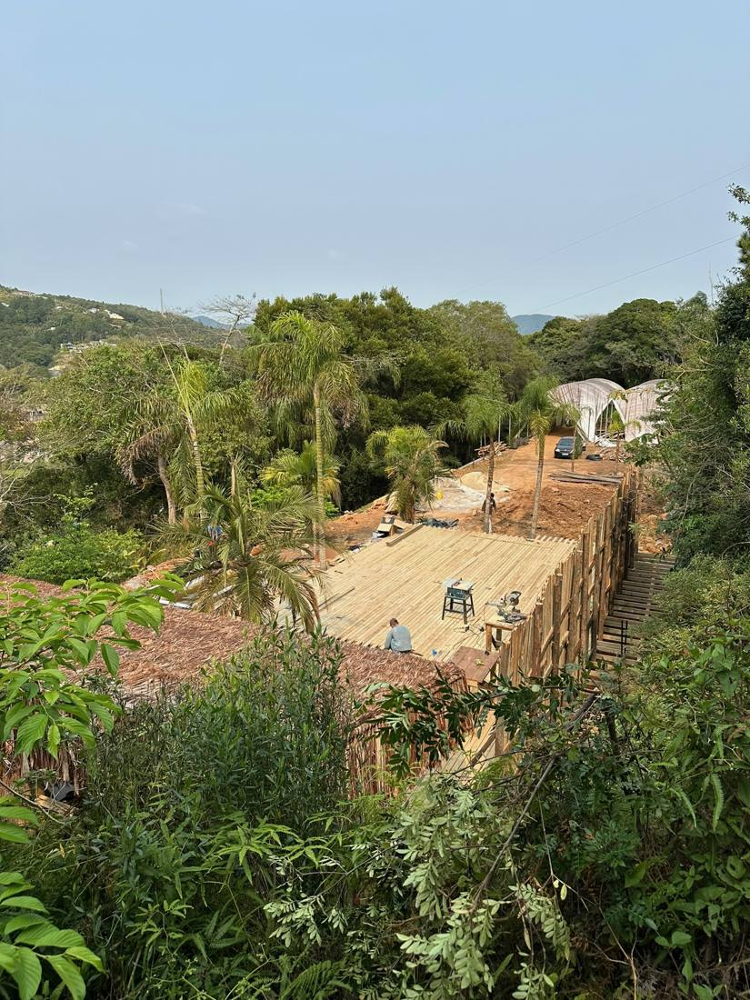
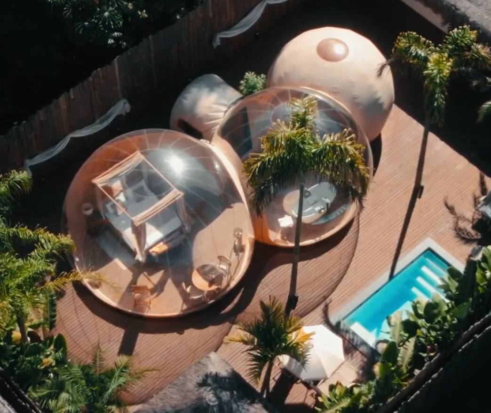

Da obra ao hóspede · Florianópolis
Sem concreto, sem obra pesada. Um deck, infraestrutura e a bolha.
Estas são fotos reais da obra da unidade de Vargem Pequena. A vegetação foi preservada, a base é um deck de madeira sobre pilares e a bolha chega embalada para ser montada.

TerrenoPreparo do solo
Terraplenagem pontual, com as palmeiras mantidas no lugar.
 Base
BaseDeck sobre pilares
A estrutura de madeira fica acima do chão. Nenhuma laje.

ApoioBanheiro e área de apoio
Madeira com casca e cobertura de palha, no conceito do lugar.

LazerPiscina
Piscina pré-fabricada, encaixada no desenho do deck.

AcabamentoDeck fechado
O deck envolve a piscina e liga todas as áreas.
 Chegada
ChegadaAs bolhas chegam
Ao fundo, as bolhas ainda embaladas, prontas para montar.

ConjuntoVista de cima
O deck inteiro no meio da mata, com a vegetação ao redor.
Operação
Primeiro hóspede
As bolhas montadas, mobiliadas e recebendo hóspedes.

Não é edificação tradicionalA unidade é um veículo de hospedagem sobre um deck, não uma construção.
Vegetação preservadaO projeto se encaixa no terreno, e não o contrário.
Cresce por móduloO mesmo deck recebe outra unidade no futuro.